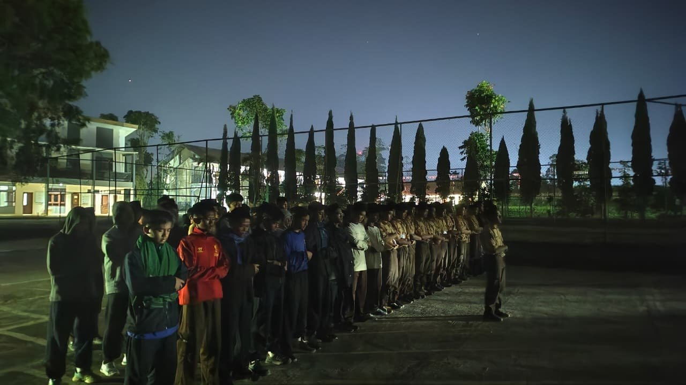
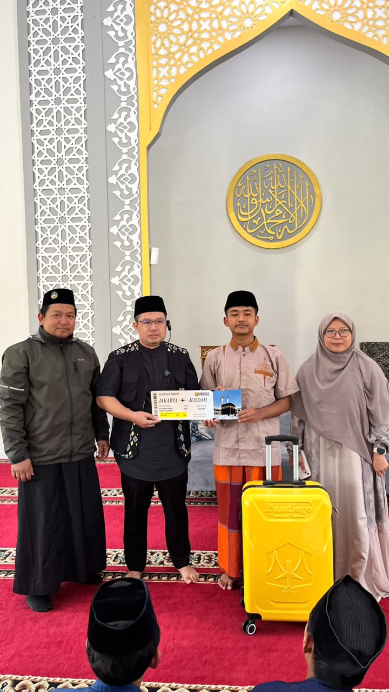
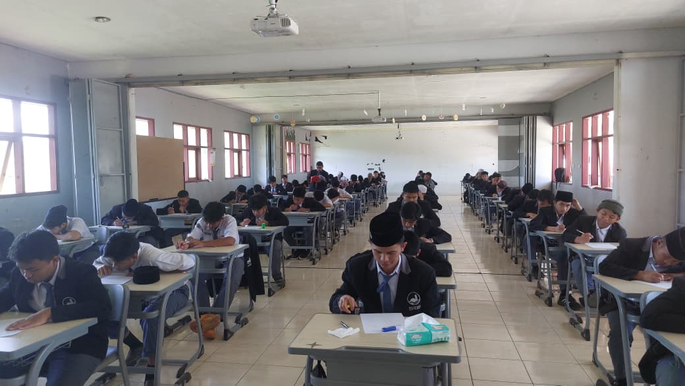
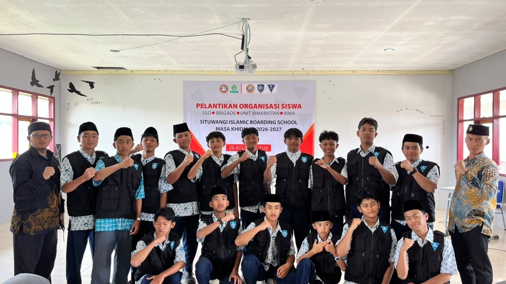

SITUWANGI ISLAMIC BOARDING SCHOOL (SIBS) adalah lembaga pendidikan berasrama dengan program pembelajaran selama 6 tahun, berlokasi di lahan seluas 20 hektar di kaki Gunung Cikuray, Garut.didirikan pada awal tahun 2010 di bawah naungan Yayasan Islam Situwangi Cikajang.

"Sistem Pendidikan Syamil Mutakamil merupakan sistem pendidikan yang komprehensif dan terpadu, mencakup aspek intelektual, emosional, dan spiritual. Melalui pendekatan ini, SIBS mengintegrasikan program Tahfizh Al-Qur'an 30 Juz selama enam tahun serta penguasaan Bahasa Arab dan Bahasa Inggris."
Situwangi Islamic Boarding School berdiri sejak 2010 di Kabupaten Garut, Jawa Barat. Selama lebih dari dua dekade, berkomitmen mencetak generasi berkarakter sebagai PEMIMPIN yang bertanggung jawab, ULAMA yang berilmu dan berakhlak, serta pribadi MANDIRI yang siap menghadapi kehidupan dan memberikan manfaat bagi umat.
Dengan fasilitas lengkap, tenaga pendidik berpengalaman, dan kurikulum yang terus diperbarui, kami siap menjadi jembatan bagi siswa menuju perguruan tinggi dan karier impian.
Lab sains, lab komputer, perpustakaan digital, lapangan olahraga
98% pendidik bergelar S1/S2 dengan sertifikasi nasional
Ratusan prestasi olimpiade sains & lomba tingkat nasional
Pemimpin, Ulama, dan Mandiri
Pendidikan terpadu yang mengembangkan hafalan Al-Qur’an, kemampuan bahasa, serta prestasi akademik untuk membentuk generasi yang berkarakter.
Program Tahfizh Al-Qur’an 30 Juz yang menjadi bagian utama pendidikan selama enam tahun dengan pembinaan hafalan dan pemahaman keislaman.
Pembelajaran bahasa secara terpadu untuk mendukung kemampuan komunikasi dan membuka wawasan siswa terhadap literatur dan lingkungan global.
Pendidikan formal dengan penguatan bidang sains untuk membekali siswa dalam melanjutkan pendidikan ke perguruan tinggi dan mengembangkan prestasi akademik.

ApresiasiSebagai bentuk apresiasi atas pencapaian dalam menyelesaikan hafalan Al-Qur'an 30 Juz, ananda Ananda Muhammad Adrian Ramdan Alamsyah memperoleh hadiah umrah dari FANDIEGO Tour & Trave yang diwakili H. Achmad Irfan.
Baca Selengkapnya
PPDB 2026Informasi dan pengumuman terbaru terkait PPDB pendidikan SIBS pada 1 November 2026.
Baca Selengkapnya
KegiatanPelantikan pengurus SSO, UBS & Brigade Situwangi tahun 2026 sebagai bagian dari pembinaan kepemimpinan, tanggung jawab, dan pengalaman berorganisasi bagi para siswa.
Baca SelengkapnyaPendaftaran dibuka mulai 1 November 2026. Kuota terbatas — segera daftar dan raih kesempatan belajar di sekolah terbaik Garut.